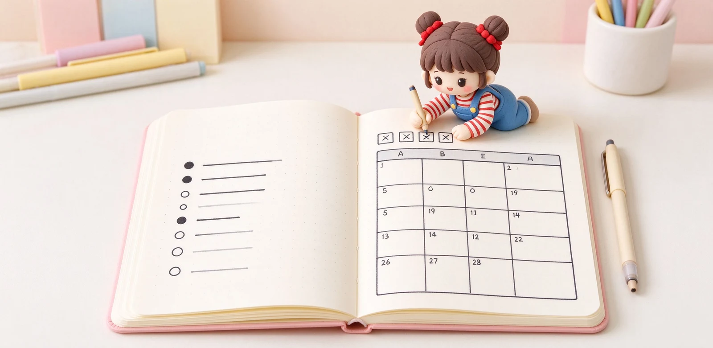

語意摘要：子彈筆記（Bullet Journal，簡稱 BuJo）由紐約產品設計師 Ryder Carroll 在 2013 年前後發展，初衷是幫自己應付注意力不集中的困擾。它用快速記錄（Rapid Logging）與符號分類：點是任務、圈是事件、破折號是筆記，再搭配索引、未來記錄、月計畫與日記四個區塊。新手不用追求畫面漂亮，先把符記慣養起來，再慢慢加上自己的排版。
子彈筆記是什麼？它不是繪本日記
網路上看到的子彈筆記常常是美美的水彩、貼紙、手寫字，但那其實是被美術化後的模樣。原裝的子彈筆記樸素得多：它是紐約產品設計師 Ryder Carroll 在 2013 年前後整理出來的一套記事系統，起因是他自己有注意力方面的困擾，需要一種不被打斷、能快速記下事情的方法。
它的核心信念很簡單：一本筆記本就好，用符號把任務、事件、想法分類，快速記錄、定期回顧。你不需要會畫畫，也不需要昂貴的手帳，一本空白或方格本就能開始。
三個基本符號：點、圈、破折號
子彈筆記把每天要記的東西分成三類，各用一個符號代表，這就是「快速記錄」：你想到一件事，不用想怎麼寫成完整句子，只要在前面打個對應符號、寫關鍵字就好。
| 符號 | 代表 | 舉例 |
|---|---|---|
| • 點 | 任務（要做的事） | • 繳學費、• 買晚餐材料 |
| ○ 圈 | 事件（有日期的事） | ○ 三點開會、○ 下週六同學會 |
| — 破折號 | 筆記（想法資訊） | — 這本書第三章重點 |
| * 星號 | 重要任務（加註） | 在 • 旁邊加 * 表示優先 |
| ! 驚嘆號 | 靈感（加註） | 在筆記旁加 ! 表示值得記住 |

四個區塊：索引、未來、月、日
索引（Index）
前幾頁留作索引，寫下「第幾頁是什麼主題」，方便你之後回頭找。子彈筆記把每個主題叫一個 Collection。
未來記錄（Future Log）
在前面留一兩頁，寫下接下來幾個月才要做的事，例如四月要繳的費、五月的考試。這樣今天看到還沒時間做的事，就丟到這裡，不用佔今天的版面。
月計畫（Monthly Log）
每月開始時，左頁寫這個月的重要事件日期，右頁寫這個月想完成的任務清單。
日記（Daily Log）
每天一開始一頁，用點、圈、破折號快速記下當天的任務、事件與筆記。沒做完的任務，晚上用「>」搬到明天或別的月份。
新手第一週怎麼開始
- 找一本空白或方格筆記本，前面留四頁當索引與未來記錄。
- 今天開始，只用點、圈、破折號三個符號記事，不要排版。
- 每天睡前回顧：做完的打 X，沒做的用 > 搬到明天。
- 一個禮拜後，試著做一次月計畫，把這個月的事件與任務寫上去。
- 等習慣了，再決定要不要加星號、驚嘆號、自己的特殊符號。
常見迷思：你不需要變成畫家
常見問題 FAQ
子彈筆記是誰發明的？
子彈筆記一定要會畫畫嗎？
點、圈、破折號分別代表什麼？
沒做完的任務怎麼辦？
要用什麼樣的筆記本開始？
資料來源與核實依據
- New to Bullet Journal? Start here!（符號與 Signifiers 官方說明）（Bullet Journal 官方）
- Ryder Carroll - The origin story of the Bullet Journal Method（Bullet Journal 官方）
- Bullet Journal: A Beginner's Guide（Carroll、ADHD、2013 起源）（OCCO London）
相關文章推薦

手帳怎麼選？週計畫、日計畫、無時間軸版型與挑選 8 問
手帳選錯版型，再漂亮也會被棄用。先想清楚你每天寫多少字、有沒有固定時刻行程，再決定週計畫、日計畫還是無時間軸。
ほぼ日手帳 Hobonichi 為何紅？巴川紙、一日一頁與選購眉角
ほぼ日手帳的紅，來自「超薄巴川紙＋一日一頁」的單純：A6 本體約新台幣六百多元起、A5 Cousin 本體約一千多元，書套另購。

筆記本怎麼選？尺寸、版型、用途與預算的抉擇順序
選筆記本順序搞反最容易後悔：先想你拿它來做什麼、每天帶不帶出門，再決定尺寸與版型，最後才看封面好不好看。